1 A warning about using EasyGui with IDLE
You may encounter problems using IDLE to run programs that use easygui. Try it and find out. easygui is a collection of Tkinter routines that run their own event loops. IDLE is also a Tkinter application, with its own event loop. The two may conflict, with the unpredictable results. If you find that you have problems, try running your program outside of IDLE.
2 Introduction
In easygui, all GUI interactions are invoked by simple function calls.
Here is a simple demo program using easygui. The screens that it produces are shown on the gallery page.
# save this file as ......| test1.py
# run this file this way..| python test1.py
import easygui as eg
import sys
while 1:
title = "Message from test1.py"
eg.msgbox("Hello, world!", title)
msg ="What is your favorite flavor?"
title = "Ice Cream Survey"
choices = ["Vanilla", "Chocolate", "Strawberry", "Rocky Road"]
choice = eg.choicebox(msg, title, choices)
# note that we convert choice to string, in case
# the user cancelled the choice, and we got None.
eg.msgbox("You chose: " + str(choice), "Survey Result")
msg = "Do you want to continue?"
title = "Please Confirm"
if eg.ccbox(msg, title): # show a Continue/Cancel dialog
pass # user chose Continue
else:
sys.exit(0) # user chose Cancel
3 EasyGui's demonstration routine
To run EasyGui's demonstration routine, invoke EasyGui from the command line this way:
python easygui.py
or from an IDE (such as IDLE, PythonWin, Wing, etc.) this way:
import easygui as eg eg.egdemo()
This will allow you to try out the various EasyGui functions, and will print the results of your choices to the console.
4 Importing EasyGui
In order to use EasyGui, you must import it.
One way to import EasyGui is to import everything. This makes it easy to invoke the EasyGui functions — you won't have to put a prefix in front of the easygui function names.
from easygui import * msgbox(...)
On the other hand, "import star" is a bad Python practice.
We recommend importing easygui and giving it a short alias. This keeps the easygui namespace separate from your application's namespace while requiring a minimum amount of typing.
import easygui as eg eg.msgbox(...)
5 Using EasyGui
Once your module has imported EasyGui, GUI operations are a simple a matter of invoking EasyGui functions with a few parameters. For example, using EasyGui, the famous "Hello, world!" program looks like this:
import easygui as eg
eg.msgbox("Hello, world!")
To see a demo of what EasyGui output looks like, invoke EasyGui from the command line,this way:
python easygui.py
To see examples of code that invokes the EasyGui functions, look at the demonstration code at the end of easygui.py.
6 Default arguments for EasyGui functions
For all of the boxes, the first two arguments are for message and title, in that order. In some cases, this might not be the most user-friendly arrangment (for example, the dialogs for getting directory and filenames ignore the message argument), but I felt that keeping this consistent across all widgets was a consideration that is more important.
Most arguments to EasyGui functions have defaults. Almost all of the boxes display a message and a title. The title defaults to the empty string, and the message usually has a simple default.
This makes it is possible to specify as few arguments as you need in order to get the result that you want. For instance, the title argument to msgbox is optional, so you can call msgbox specifying only a message, this way:
eg.msgbox("Danger, Will Robinson!")
or specifying a message and a title, this way:
eg.msgbox("Danger, Will Robinson!", "Warning!")
On the various types of buttonbox, the default message is "Shall I continue?", so you can (if you wish) invoke them without arguments at all. Here we invoke ccbox (the close/cancel box, which returns a boolean value) without any arguments at all.
if eg.ccbox():
pass # user chose to continue
else:
return # user chose to cancel
7 Using keyword arguments when calling EasyGui functions
It is possible to use keyword arguments when calling EasyGui functions. (Prior to version 0.80, only the use of positional arguments was documented. In version 0.80, parameter names were modified to be more consistent, and the use of keyword arguments was documented.)
Suppose for instance that you wanted to use a buttonbox, but (for whatever reason) did not want to specify the title (second) positional argument. You could still specify the choices argument (the third argument) using a keyword, this way:
choices = ["Yes","No","Only on Friday"]
reply = eg.choicebox("Do you like to eat fish?", choices=choices)
8 Using buttonboxes
There are a number of functions built on top of buttonbox for common needs.
8.1 msgbox
msgbox displays a message and offers an OK button. You can send whatever message you want, along with whatever title you want. You can even over-ride the default text of "OK" on the button if you wish. Here is the signature of the msgbox function:
def msgbox(msg="(Your message goes here)", title="", ok_button="OK"):
....
The clearest way to over-ride the button text is to do it with a keyword argument, like this:
eg.msgbox("Backup complete!", ok_button="Good job!")
Here are a couple of examples
eg.msgbox("Hello, world!")
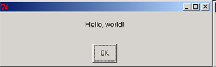
msg = "Do you want to continue?"
title = "Please Confirm"
if eg.ccbox(msg, title): # show a Continue/Cancel dialog
pass # user chose Continue
else: # user chose Cancel
sys.exit(0)
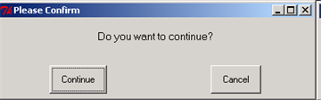
8.2 ccbox
ccbox offers a choice of Continue and Cancel, and returns either 1 (for continue) or 0 (for cancel).
NOTE that this box returns integer values (1 and 0), not true boolean values (true and false), which became available in Python version 2.3.
8.3 ynbox
ynbox offers a choice of Yes and No, and returns either 1 (for yes)or 0 (for no).
NOTE that this box returns integer values (1 and 0), not true boolean values (true and false), which became available in Python version 2.3.
8.4 buttonbox
buttonbox displays a message, a title, and a set of buttons. Returns the text of the button that the user selected.
Some boxes (e.g. ynbox, ccbox) come with a pre-defined set of buttons. You have no choice about what buttons they display.
In contrast, buttonbox allows you to display a set of buttons that you define.
When the user clicks on one of the buttons, buttonbox returns the text of the button.
If the user cancels or closes the buttonbox, the default choice (the first choice) is returned.
8.5 indexbox
indexbox displays a message, a title, and a set of buttons.
It returns the index of the user's choice. For example, if you invoked index box with three choices (A, B, C), indexbox would return 0 if the user picked A, 1 if he picked B, and 2 if he picked C.
8.6 boolbox
boolbox (boolean box) displays a message, a title, and a set of buttons.
Returns returns 1 if the first button is chosen. Otherwise returns 0.
Here is a simple example of a boolbox():
message = "What does she say?"
title = ""
if eg.boolbox(message, title, ["She loves me", "She loves me not"]):
sendher("Flowers")
else:
pass
9 How to show an image in a buttonbox
When you invoke the buttonbox function (or other functions that display a button box, such as msgbox, indexbox, ynbox, etc.), you can specify the keyword argument image=xxx where xxx is the filename of a .gif image. Note that .gif is the only format currently supported.
If an image argument is specified, the image file will be displayed after the message.
Here is some sample code from EasyGui's demonstration routine.
image = "python_and_check_logo.gif" msg = "Do you like this picture?" choices = ["Yes","No","No opinion"] reply = eg.buttonbox(msg,image=image,choices=choices)
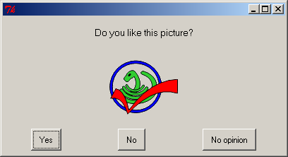
10 Letting the user select from a list of choices
10.1 choicebox
Buttonboxes are good for offering the user a small selection of short choices. But if there are many choices, or the text of the choices is long, then a better strategy is to present them as a list.
choicebox provides a way for a user to select from a list of choices. The choices are specified in a sequence (a tuple or a list). The choices will be given a case-insensitive sort before they are presented.
The keyboard can be used to select an element of the list.
Pressing "g" on the keyboard, for example, will jump the selection to the first element beginning with "g". Pressing "g" again, will jump the cursor to the next element beginning with "g". At the end of the elements beginning with "g", pressing "g" again will cause the selection to wrap around to the beginning of the list and jump to the first element beginning with "g".
If there is no element beginning with "g", then the last element that occurs before the position where "g" would occur is selected. If there is no element before "g", then the first element in the list is selected.
msg = "What is your favorite flavor?" title = "Ice Cream Survey" choices = ["Vanilla", "Chocolate", "Strawberry", "Rocky Road"] choic = eg.choicebox(msg, title, choices)
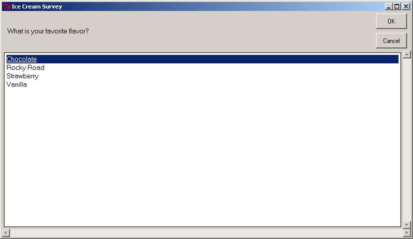
choicebox (Windows2000). Click to enlarge.
{kind=link}
Another example of a choicebox
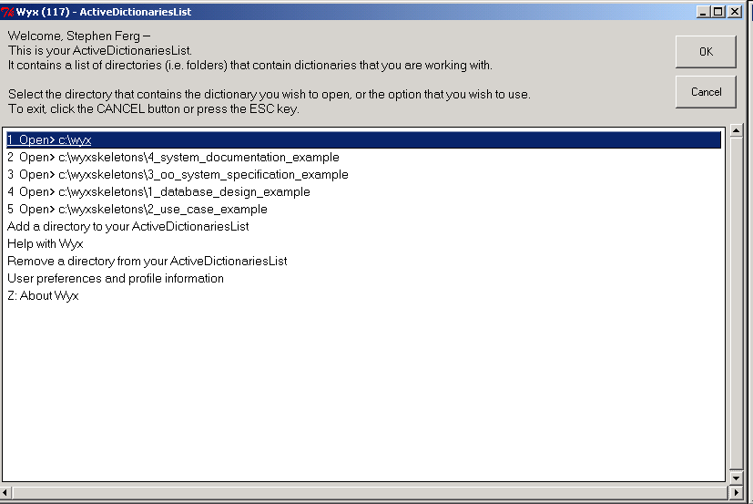
choicebox (Windows2000). Click to enlarge.
{kind=link}
10.2 multchoicebox
The multchoicebox() function provides a way for a user to select from a list of choices. The interface looks just like the choicebox, but the user may select zero, one, or multiple choices.
The choices are specified in a sequence (a tuple or a list). The choices will be given a case-insensitive sort before they are presented.
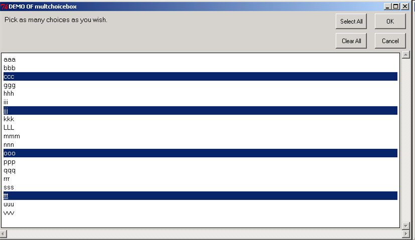
multchoicebox (Windows2000). Click to enlarge.
{kind=link}
11 Letting the user enter information
11.1 enterbox
enterbox is a simple way of getting a string from the user
11.2 integerbox
integerbox is a simple way of getting an integer from the user.
11.3 multenterbox
multenterbox is a simple way of showing multiple enterboxes on a single screen.
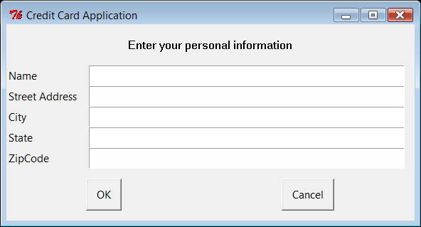
multenterbox (WindowsVista). Click to enlarge.
{kind=link}
In the multenterbox :
If there are fewer values than names, the list of values is padded with empty strings until the number of values is the same as the number of names.
If there are more values than names, the list of values is truncated so that there are as many values as names.
Returns a list of the values of the fields, or None if the user cancels the operation.
Here is some example code, that shows how values returned from multenterbox can be checked for validity before they are accepted.
msg = "Enter your personal information"
title = "Credit Card Application"
fieldNames = ["Name","Street Address","City","State","ZipCode"]
fieldValues = [] # we start with blanks for the values
fieldValues = eg.multenterbox(msg,title, fieldNames)
# make sure that none of the fields was left blank
while 1: # do forever, until we find acceptable values and break out
if fieldValues == None:
break
errmsg = ""
# look for errors in the returned values
for i in range(len(fieldNames)):
if fieldValues[i].strip() == "":
errmsg = errmsg + ('"%s" is a required field.\n\n' % fieldNames[i])
if errmsg == "":
break # no problems found
else:
# show the box again, with the errmsg as the message
fieldValues = eg.multenterbox(errmsg, title, fieldNames, fieldValues)
print ("Reply was:", fieldValues)
Here is some example code, that shows how values returned from multpasswordbox can be checked for validity before they are accepted.
msg = "Enter logon information"
title = "Demo of multpasswordbox"
fieldNames = ["Server ID", "User ID", "Password"]
fieldValues = [] # we start with blanks for the values
fieldValues = eg.multpasswordbox(msg,title, fieldNames)
# make sure that none of the fields was left blank
while 1:
if fieldValues == None: break
errmsg = ""
for i in range(len(fieldNames)):
if fieldValues[i].strip() == "":
errmsg = errmsg + ('"%s" is a required field.\n\n' % fieldNames[i])
if errmsg == "":
break # no problems found
else:
# show the box again, with the errmsg as the message
fieldValues = eg.multpasswordbox(errmsg, title, fieldNames, fieldValues)
print ("Reply was:", fieldValues)
12 Letting the user enter password information
12.1 passwordbox
A passwordbox box is like an enterbox, but used for entering passwords. The text is masked as it is typed in.
12.2 multpasswordbox
multpasswordbox has the same interface as multenterbox, but when it is displayed, the last of the fields is assumed to be a password, and is masked with asterisks.
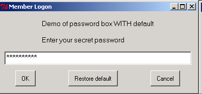
13 Displaying text
EasyGui provides two functions for displaying text.
- textbox displays text in a proportional font. The text will word-wrap.
- codebox displays text in a monospaced font and does not wrap.
It is possible to cut-and-paste out of and into these boxes.
Both of these boxes return their contents, so it is possible to use them as an alternative to enterbox for allowing the user to enter multiple lines of text.
Note that you can pass these boxes either a string or a list of strings. A list of strings will be converted to text before being displayed. This means that you can use these boxes to display the contents of a file this way:
filename = os.path.normcase("c:/autoexec.bat")
f = open(filename, "r")
text = f.readlines()
f.close()
eg.codebox("Contents of file " + filename, "Show File Contents", text)
13.1 textbox
The textbox() function displays text in a proportional font. The text will word-wrap.
13.2 codebox
The codebox() function displays text in a monospaced font and does not wrap.
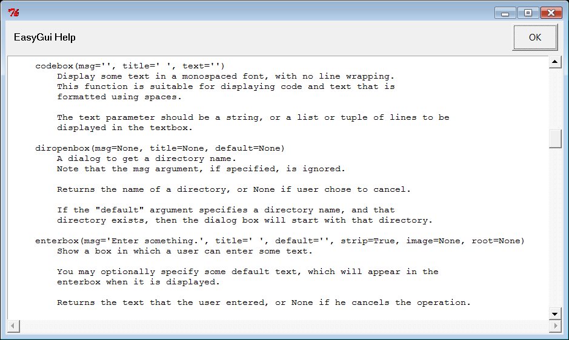
codebox (WindowsVista). Click to enlarge.
{kind=link}
14 Working with files
EasyGui provides some basic functions for navigating through the file system and choosing a directory or a file.
(These functions are wrappers around widgets and classes in lib-tk.) Note that in the current version of EasyGui, the startpos argument is not supported.
14.1 diropenbox
diropenbox returns the name of a directory
14.2 fileopenbox
fileopenbox returns the name of a file
14.3 filesavebox
filesavebox returns the name of a file
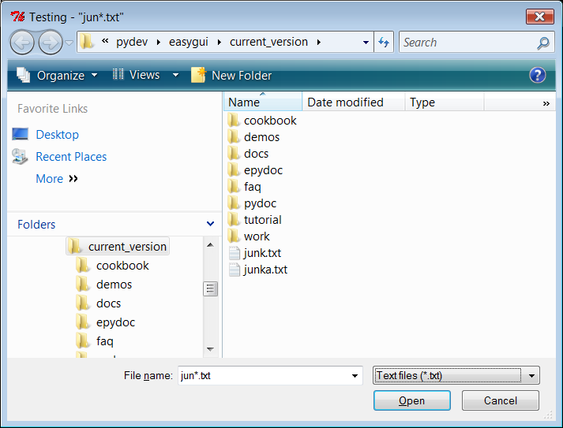
fileopenbox (WindowsVista). Click to enlarge.
{kind=link}
15 Remembering User Settings
15.1 EgStore
A common need is to ask the user for some setting, and then to "persist it", or store it on disk, so that the next time the user uses your application, you can remember his previous setting.
In order to make the process of storing and restoring user settings, EasyGui provides a class called EgStore. In order to remember some settings, your application must define a class (let's call it Settings, although you can call it anything you want) that inherits from EgStore.
Your application must also create an object of that class (let's call the object settings).
The constructor (the __init__ method) of the Settings class must initialize all of the values that you wish to remember.
Once you have done this, you can remember the settings simply by assigning values to instance variables in the settings object, and use the settings.store() method to persist the settings object to disk.
Here is an example of code to create the Settings class:
#----------------------------------------------------------------------- # define a class named Settings as a subclass of eg.EgStore #----------------------------------------------------------------------- class Settings(eg.EgStore): def __init__(self, filename): # filename is required #------------------------------------------------- # Specify default/initial values for variables that # this particular application wants to remember. #------------------------------------------------- self.userId = "" self.targetServer = "" #------------------------------------------------- # For subclasses of eg.EgStore, these must be # the last two statements in __init__ #------------------------------------------------- self.filename = filename # this is required self.restore() # restore values from the storage file if possible
Here is an example of code to create the settings object. Simply creating the settings object will restore its values from the settingsFile, if the settingsFile exists.
#-----------------------------------------------------------------------
# create "settings", a persistent Settings object
# Note that the "filename" argument is required.
# The directory for the persistent file must already exist.
#-----------------------------------------------------------------------
settingsFilename = os.path.join("C:", "myApp", "settings.txt") # Windows example
settings = Settings(settingsFilename)
And here is example code of using the settings object.
# we initialize the "user" and "server" variables # In a real application, we'd probably have the user enter them via enterbox user = "obama_barak" server = "whitehouse1" # we save the variables as attributes of the "settings" object settings.userId = user settings.targetServer = server settings.store() # persist the settings # run code that gets a new value for userId # then persist the settings with the new value user = "biden_joe" settings.userId = user settings.store()
16 Trapping Exceptions
16.1 exceptionbox
Sometimes exceptions are raised... even in EasyGui applications. Depending on how you run your application, the stack trace might be discarded or written to stdout while your application crashes.
EasyGui provides a better way of handling exceptions via exceptionbox. Exceptionbox displays the stack trace in a codebox and may allow you to continue processing.
Exceptionbox is easy to use. Here is a code example.
try:
crashMyApplication() # this may raise an exception
except:
eg.exceptionbox()
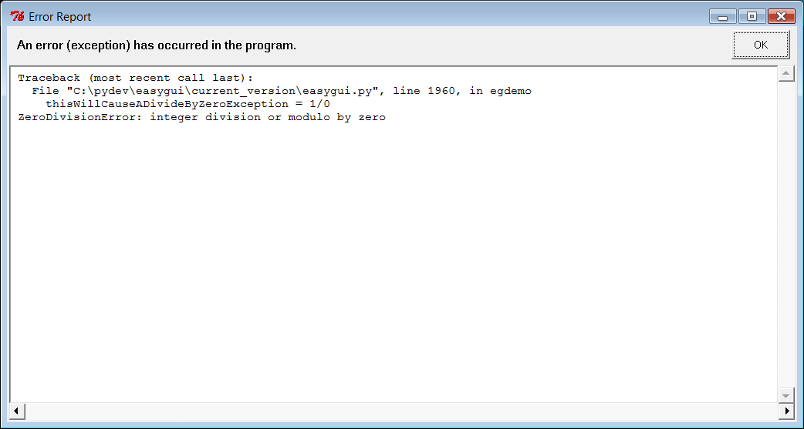
exceptionbox (WindowsVista). Click to enlarge.
{kind=link}
Top ^